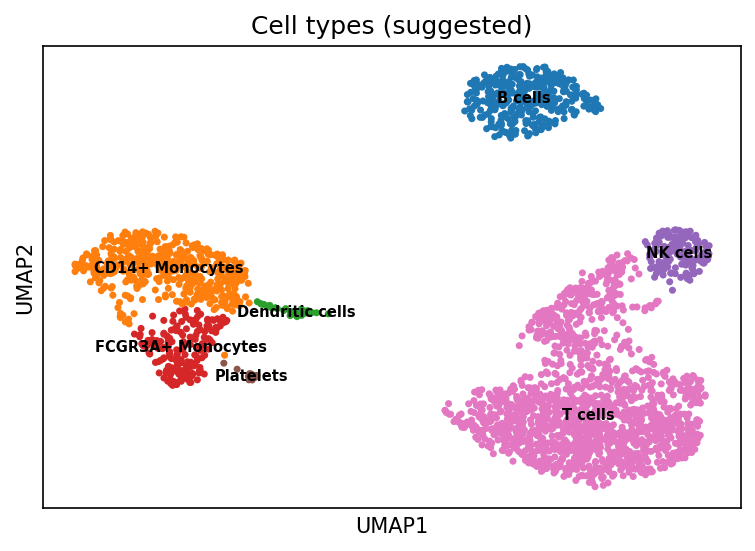
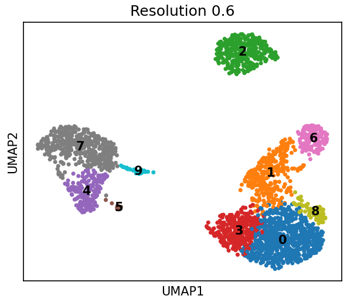
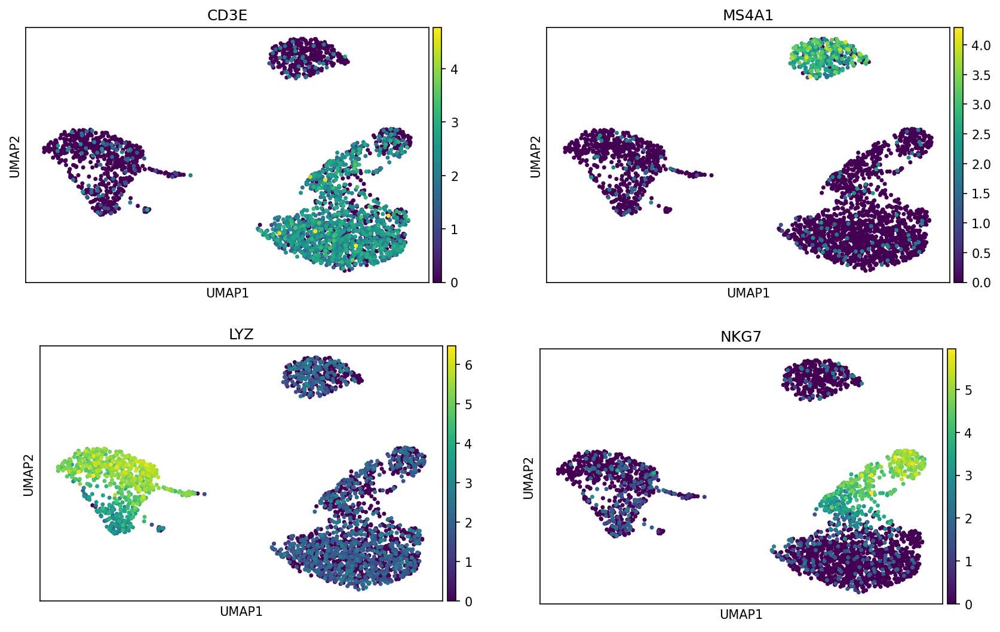

Aprenda os fundamentos
PBMC, células T, B, NK e monócitos, o PBMC3k, o arquivo .h5ad e o UMAP na prática, com quiz e referências em português e inglês.
Abrir a aulascRNA-seq · PBMC3k · Leiden · v0.2.0
O Cell-Atlas é um pipeline Python reprodutível que transforma 2.700 células e 32.738 genes, sem nenhum rótulo, em um mapa celular anotado. Um comando, semente fixa, testes automatizados.

Pipeline
Parâmetros seguem as boas práticas de Luecken & Theis (2019) e ficam centralizados em Config, sobrescrevíveis por arquivo TOML/JSON.
Remove células com <200 ou >2.500 genes e >5% de RNA mitocondrial; genes em <3 células.
cellatlas download / preprocess10 mil contagens por célula + log. Transcriptoma completo guardado em .raw; 2.000 genes variáveis.
Escala e reduz 2.000 dimensões a 10 componentes, onde a curva de variância achata.
cellatlas preprocessCada célula ligada às 15 mais parecidas; Leiden em 0,2 · 0,4 · 0,6 · 1,0; UMAP para visualizar.
cellatlas clusterWilcoxon por grupo e escore de marcadores clássicos: cada grupo recebe um tipo celular sugerido.
cellatlas annotateExplorar
Mesmas células, mesma semente: só o parâmetro muda. As imagens são as saídas reais do pipeline.
Resolução usada na anotação: cada tipo imune principal já aparece separado, sem fragmentar populações homogêneas.

Resultados
Células T somam 1.464 das 2.638 células (55%), como esperado no sangue saudável. Até as 14 plaquetas (0,5%) formam um grupo próprio. Comparada aos rótulos de especialistas do tutorial clássico, a anotação automática concorda em 96,8% das células (ARI 0,96; cellatlas compare, detalhes).
| Grupo | Tipo sugerido (automático) | Top genes (Wilcoxon) | Células | Leitura biológica |
|---|---|---|---|---|
| 0 | Células T | RPS12, RPS6, RPS27 | 737 | T naïve; genes ribossomais dominam |
| 1 | Células T | CCL5, NKG7, B2M | 332 | T CD8+ citotóxicas |
| 2 | Células B | CD74, CD79A, HLA-DRA | 344 | Linfócitos B |
| 3 | Células T | LTB, IL32, CD3D | 330 | T CD4+ de memória |
| 4 | Monócitos FCGR3A+ | LST1, COTL1, FCER1G | 196 | Monócitos não clássicos (CD16+) |
| 5 | Plaquetas | PF4, PPBP, NRGN | 14 | Plaquetas |
| 6 | Células NK | NKG7, GZMB, PRF1 | 142 | Natural killer |
| 7 | Monócitos CD14+ | S100A9, LYZ, S100A8 | 443 | Monócitos clássicos |
| 8 | Células T | MALAT1, RPL32, RPS3 | 65 | Pouco específico; possível baixa qualidade |
| 9 | Células dendríticas | HLA-DPA1, HLA-DPB1, HLA-DRA | 35 | Apresentadoras de antígeno |

CD3E nas células T, MS4A1 nas B, LYZ nos monócitos, NKG7 nas NK. Ver os 15 marcadores.

Depois do 10º componente cada eixo acrescenta pouco: justifica n_pcs = 10.

Ponto de partida para a leitura biológica: CD79A no grupo B, S100A8/9 e LYZ nos monócitos, GZMB e PRF1 nas NK.
Executar
Rode sempre a partir da raiz do repositório: dados/, figuras/ e resultados/ são relativos ao diretório atual.
> git clone https://github.com/rubenslyra/Cell-Atlas.git; cd Cell-Atlas
> python -m venv .venv; .\.venv\Scripts\Activate.ps1
> pip install -e ".[dev]"
> cellatlas run-all$ git clone https://github.com/rubenslyra/Cell-Atlas.git && cd Cell-Atlas
$ python -m venv .venv && source .venv/bin/activate
$ pip install -e ".[dev]"
$ cellatlas run-allcellatlas <comando> com o pacote instalado (recomendado)python -m cellatlas <comando> sem depender do PATHpython main.py <comando> direto do repositório, sem instalarComandos: download, preprocess, cluster, annotate, compare, run-all.
| Opção | O que faz | Exemplo |
|---|---|---|
--config | Lê parâmetros de um arquivo TOML/JSON; chaves desconhecidas geram erro | --config cellatlas.example.toml |
--resolutions | Resoluções do Leiden a testar | --resolutions 0.4 0.8 1.2 |
--target-resolution | Coluna de agrupamento usada na anotação | --target-resolution leiden_1.0 |
--seed | Semente de vizinhança, UMAP e Leiden | --seed 42 |
--data-dir, --figures-dir, --results-dir | Onde ler e gravar artefatos | --data-dir dados |
compare | Compara a anotação com rótulos de especialistas (e com o CellTypist, opcional) | cellatlas compare --celltypist-model Immune_All_Low.pkl |
--debug | Mostra o traceback completo em caso de erro | run-all --debug |
--version | Versão instalada | cellatlas --version |
Arquitetura
Cada etapa é uma classe atrás de uma interface (IPreprocessor, IClusterer, IAnnotator), com configuração única, gravação atômica dos .h5ad e testes de regressão.
.raw mesmo fora dos genes variáveis (teste dedicado)Cell-Atlas/
├── main.py # python main.py <comando>
├── cellatlas.example.toml # parâmetros via --config
├── src/cellatlas/
│ ├── __main__.py # python -m cellatlas
│ ├── cli/ # argparse, códigos de saída
│ ├── core/ # Config, interfaces, Pipeline
│ ├── data/ # PBMC3kLoader, DataLoader
│ ├── analysis/ # QC/PCA, Leiden, anotação
│ └── utils/ # io atômico, logger, validação
├── tests/ # pytest
├── tools/check_docs.py # valida docs/ no CI
├── docs/ # este site, treino e slides
├── dados/ figuras/ resultados/
└── pyproject.tomlApresentação
Slides, roteiro e um treinador de voz que responde perguntas e simula uma entrevista técnica.
PBMC, células T, B, NK e monócitos, o PBMC3k, o arquivo .h5ad e o UMAP na prática, com quiz e referências em português e inglês.
Abrir a aulaPergunte pelo microfone e ouça a resposta; treine uma entrevista com feedback; ensaie o roteiro cronometrado.
Abrir o treinoSete slides 16:9 com as figuras reais e a narração nas notas. Setas para navegar, F para tela cheia, N para notas.
Abrir os slidesNarração cena a cena, como ler cada figura, limitações e respostas para as perguntas mais prováveis.
Ler o roteiroLimitações
Referências